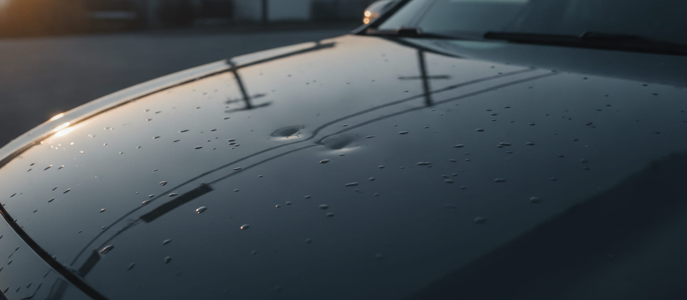
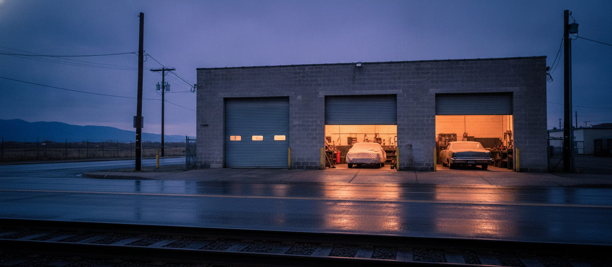
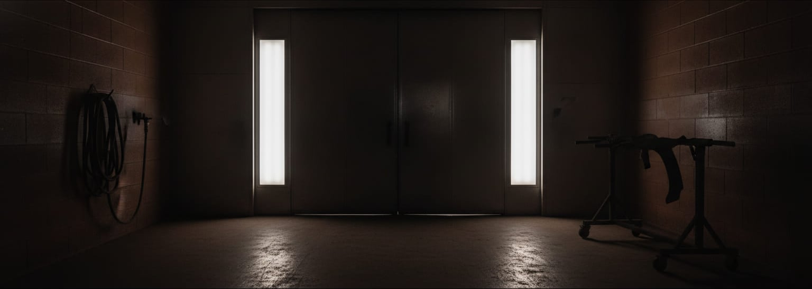
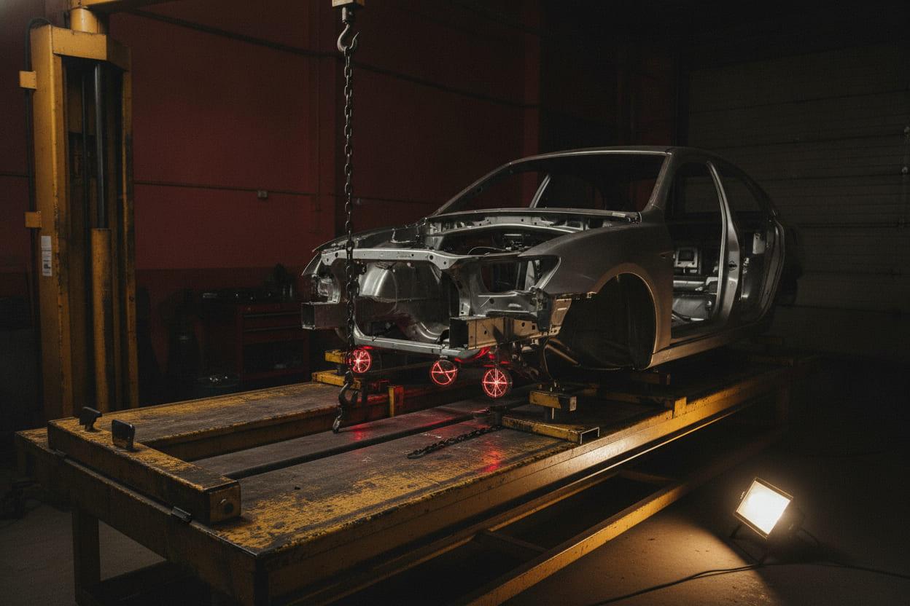
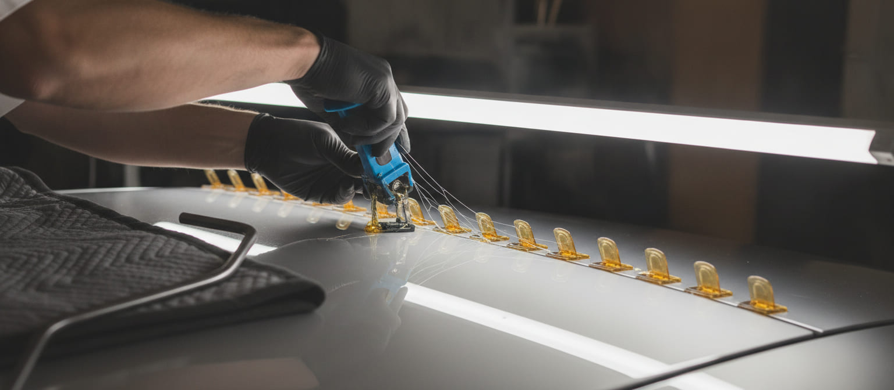
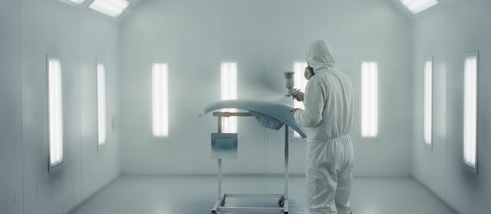
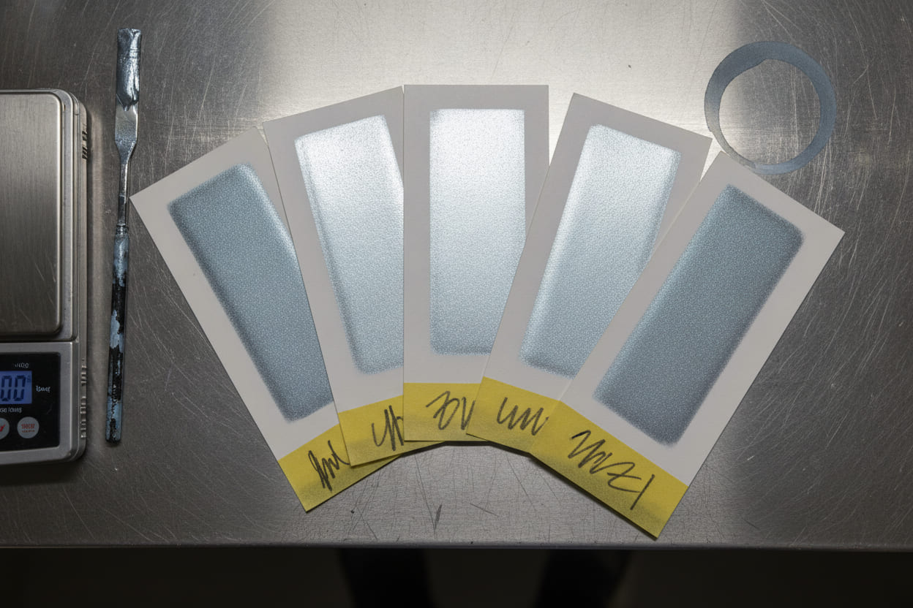

Hail damage
Sixty to ninety dents across hood, roof and deck lid, all from one direction. Most come back out with rods and glue tabs, with your factory paint left on the car. Three to five working days.
Typically $1,900 – $3,400

Hail & collision repairS Kalamath St, DenverSince 1994
Parts and paint before the bay.
Hail, collision, refinish and unibody work for drivers across south Denver. We do not open a bay until every part and every ounce of your colour is on the shelf in this building — so your car stays in your driveway until the day the work actually starts, and you leave the counter with two dates in writing.
Storm of June 11 · intake board open · next open bay Thursday
What we do
Almost everything that comes through these doors is one of three jobs. If your car is more than one of them — and after a bad cell it usually is — it is still one estimate, one date and one invoice.

Sixty to ninety dents across hood, roof and deck lid, all from one direction. Most come back out with rods and glue tabs, with your factory paint left on the car. Three to five working days.
Typically $1,900 – $3,400

Bumper covers, doors, quarters and everything behind them. Panels are replaced or straightened, refinished in the booth, and blended into their neighbours so there is no edge left to find.
Panel and refinish from $1,450

Hit hard enough to move the body, the car goes on the bench and is pulled back to published numbers. Then the cameras and radar get aimed again, with the printout stapled to your file.
Recalibration $285 – $640
The board
The complaint in this city is not the price. It is the car that goes in and stays in for weeks while somebody waits on a bumper cover. Three rules keep that from happening here, and they are written on the board at the counter.
No bay opens until every part and every ounce of your colour is on the shelf in this building. A bay with a car in it and nothing to put on the car is not progress — it is storage, and you pay for it.
You keep driving it. Hail is ugly, not dangerous. When the shelf is full we call you in, and that day the work starts. Not a day earlier.
You leave the counter with a drop-off date and a pick-up date. If a back-ordered part moves either one, Renata calls the day we find out.
What hail does
Hail does not hit your car once. That is why the damage reads as weather and not as an accident: the dents line up, they are all roughly the same shape, and they are all on the surfaces that face the sky.
Ice keeps that record for an hour. Sheet metal keeps it until somebody takes it back out.
A dent is metal that got stretched. Stretched metal wants to come back. That is the whole trade.
A hooked rod goes in behind the panel, through a drain hole or a lamp opening, and pushes the low spot up. Nothing is drilled that was not already open.
Where there is no way in behind — a roof with a headliner, a double-skinned hood — a nylon tab is glued to the outside and lifted. The glue releases with alcohol.
Every pull leaves a high spot. A plastic-faced hammer walks it back down a few thousandths at a time, read off a striped board, until the line is straight.

You hear it at the counter with the estimate — not on day three, with the car already apart.
The booth
Two-part epoxy, oxide red, two coats. It is the state your panel lives in for most of its stay here, and the only state you will never see. Every surface on this page is that colour on purpose.

Ten fixtures. Five thousand kelvin. Colour rendering above ninety. The only room on this property built for one purpose: to tell us the truth about a colour. No phone, screen or parking lot can do that.
It is also the only photograph on this page we left alone. Every other one has been pulled down into the colour of primer. Grading the one room built to judge colour would have been a strange thing to do.
Colour is not a property of the paint. It is a property of the paint under a light. Two greys that match under shop fluorescents can be a mile apart outside, and your car lives outside. This room is the only place a match is allowed to be judged.
Air comes down through the ceiling filters and out through the floor, so overspray never crosses back over a wet panel. Colour, then clear, then bake. Nobody opens the door to look — that is what the window is for.
Color
There is a three-character code on a plate inside your driver's door. It tells us the colour your car left the factory in. It does not tell us what eleven Colorado summers did to it.
So Marisol mixes to the formula, sprays a test card, bakes it, and holds it against your panel under booth light. If the card is wrong the card goes in the bin. Nothing touches the car until a card is right.
Yours then goes in the file with the invoice, so that in four years, when somebody backs into the same door, we start from a known answer.

A door can match perfectly on the bench and still read as a repair, because your eye never looks at one panel — it compares it to the one beside it. So the colour runs out into the fender until there is no edge left.
Toners go on the scale to a hundredth of a gram, in the order the formula lists them. Eyeballing a mix is how a silver turns green by August.
Every card wears a strip of masking tape and a grease-pencil note: variant, coats, booth, day.
The blend panel hangs on the intake side of the booth, never near the exhaust. Overspray falls downwind, and downwind is where a match dies. A two-foot decision you will notice for eight years, or never notice at all.
Every surface on this page is one of those three: the primer your panel wears between the metal and the colour, the light in the booth, and the bench and floor stripe — yellow because a safety code says so, not because somebody liked it.
Structure and sensors
The bench, mid-week · that wall behind it is the colour of this page
Your car does not have a frame under it. The body is the frame. Hit hard enough to move it, we clamp it by the pinch welds onto the bench and pull it back to a published set of numbers.
Three laser targets read against the factory dimensions before the first pull and after the last. You get both sheets. A car that measures right and a car that looks right are not the same car.
Cameras behind the windshield, radar behind the bumper cover, blind-spot units in the quarters. A sensor does not have to be damaged to be wrong: move its mount by a degree and the car keeps telling you it is fine while it looks a lane to the left.
So it is aimed again before it goes home — against targets, on a level floor, with the tyre pressures set. A soft rear tyre tilts the whole car, and the camera aims where the car points.
Clamped at the pinch welds, pulled with a hydraulic tower, held under tension while the steel comes back.
Anything structural, anything behind glass, anything behind a bumper cover, and any suspension or alignment work.
The targets, the distances, the before-and-after sheets and the pass, stapled to your copy of the file.
The estimate
Your deductible is your deductible. A shop that offers to eat it is taking that money back out of your car somewhere you will not look — a used bumper cover, one coat of clear where there should be two, a blend that stops at the seam.
Colorado gives you the shop. Your carrier can recommend one. It cannot require one. If somebody is telling you otherwise, they are telling you wrong, and we will write the estimate either way.
Who is here
Every big cell brings crews in from out of state. Some are very good. All of them are temporary. The question was never whether the work looks right in June under a canopy — it is who answers the phone in February, when the clear on that quarter starts to lift.
Ionuț Barbu came to Denver in 2016 chasing a storm, the same way those crews do. He stayed, and he runs the dent bench here now.
Workmanship and refinish for as long as you own the car, written on the invoice — from a building that has been on Kalamath since 1994.
Questions we answer every day
For hail, most cars are three to five working days once they come in. For collision work with parts, the counter gives you a drop-off date and a pick-up date before you sign anything. The waiting happens before you hand us the keys, not after.
No. Colorado gives you the shop. Your carrier can recommend one. It cannot require one. We write the estimate and work the claim either way.
No. Your deductible is your deductible. A shop that offers to absorb it is taking that money back out of your car somewhere you will not look.
That is what the test card is for. We mix, spray a card, bake it, and judge it against your panel under booth light before anything touches the car. Then we blend into the neighbouring panels so there is no edge left to find.
Twenty-four hours a day, inside the metro, at 303 555 0148. It is $150, and it comes off the bill if the repair is ours.
Visit · dispatch